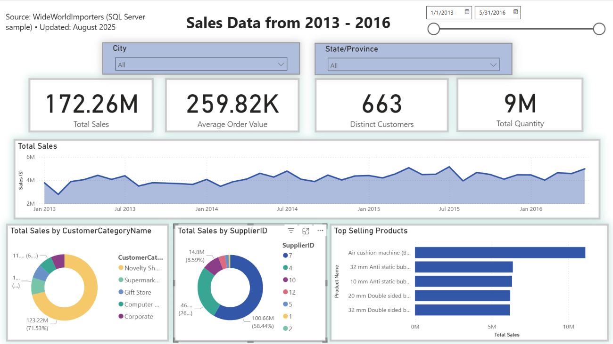
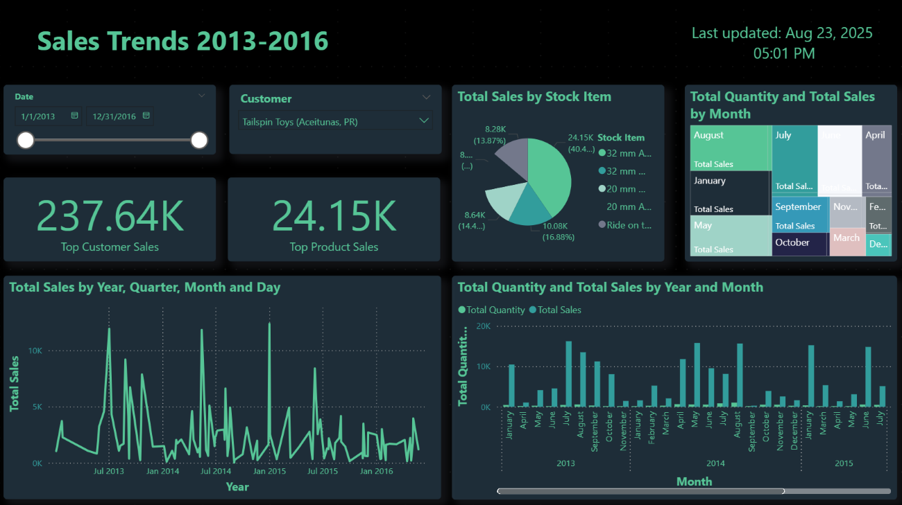

Project Overview
My first goal was to showcase a live Power BI dashboard embedded directly in the portfolio. After multiple attempts,
I found that authentication requirements created a barrier for anyone without access to my Microsoft account.
To keep the portfolio universally accessible, I chose to provide high-resolution screenshots and downloadable
.pbix files so viewers can open, explore, and interact locally without account or system constraints.
Looking ahead, I plan to publish interactive dashboards with Tableau Public as a more open option for sharing live, browser-based reports. This will let visitors engage with filters and comparisons online while I continue to document design choices, data modeling decisions, and tradeoffs between convenience, control, and reproducibility.
As I iterate, I’m prioritizing explanations of “why” alongside “what”: why a donut replaced the map, why a fixed 90-day window stabilizes comparisons, and why downloadable files improve access. The portfolio aims to show decisions, not just outputs, so that a reviewer can follow the modeling choices, troubleshooting steps, and the rationale for publishing formats that fit real-world constraints.
Sales Trends Dashboard
The Sales Trends dashboard began as a baseline for clean measures and visuals and became a study in practical publishing.
Dynamic map visuals were replaced with a donut for distribution and a Top-10 bar for focus, which simplified the layout
without losing the story. The current approach balances clarity and performance, and the included .pbix lets
anyone open the model to inspect relationships, DAX, and visual settings end-to-end.

Build notes
- Model: OLTP joins (Invoices, InvoiceLines, Customers, StockItems) → simple star.
- Measures:
Total Sales,Total Quantity,YoY Sales %. - Visuals: KPI cards, Monthly trend, Donut (Sales by Region), Top‑10 Products.
- Troubleshooting: dropped live embed due to auth; used static PNG + write‑up.
WideWorldImporters — Continued
The “Inventory” dashboard connects sales activity with stock levels to show how categories contribute differently over time.
I calculated overall sales and growth measures in DAX, then used a mix of clustered and stacked charts to highlight which
items and customers drive the most change. A donut chart provides a snapshot of contribution by category, while line and
bar charts track performance month to month. The visuals are designed to communicate both scale and comparison, combining
distribution charts with time-based trends. The portfolio includes a screenshot for quick reference, and the
.pbix lets reviewers interact with the report in Power BI.

Build notes
- Model: WideWorldImportersDW (
Fact.Sale,Fact.Stock Holding,Dimension.Date,Customer,Stock Item). - Measures used:
Total Sales,Total Quantity,YoY Sales %, comparisons (e.g., Avg/Max across items). - Visuals on “Inventory” page: segment donut, Top‑N bar, stacked/clustered columns, trend comparison line, matrix heatmap.
- Notes: relationships set to single‑direction to avoid ambiguous paths; static image used to avoid live auth issues.